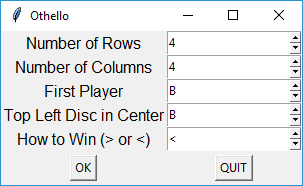
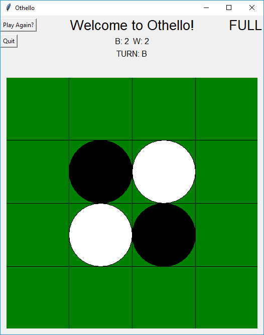

I am a fourth year student studying Computer Science at the University of California, Irvine, and am currently
looking for a full-time job within that field. I'm interested in many things within Computer Science, so I am open
to new experiences and learning new things. More than anything, I want to continue learning, and apply the
skills I have attained throughout my career. I have a deep interest in the arts, and am aiming to find new ways
to merge the skills I've gotten through Computer Science and apply them in creative, different ways.
Education
University of California, Irvine
Duration: September 2014 - June 2018
Dean's Honor List
GPA: 3.31
Coursework: Data Structures in C++, Computational Linear Algebra, Intro to Statistics
(CS-related)
Yonsei University, Seoul, Korea (Education Abroad
Program)
Duration: August 23, 2014 - December 22, 2014 (4 months)
Overall, going abroad for those 4 months was a life-changing experience. I was given a once-in-a-lifetime
opportunity to explore a different country, having a completely different lifestyle from before. I
learned to adapt to my surroundings, engage myself in a language a barely knew, and continue
to be open-minded to a culture so different from my own.
Programming
C++
Python
Assembly
SQL
Clion
Spoken Languages
Spanish
Korean
Projects
The following projects below are all school assignments throughout
my college career at UCI.
Instant Runoff Voting Simulation
Created a user-input prompt to receive candidate’s voter preferences via text file
Read and organized information from text file into a map through 4 functions (using array maps, array sets, priority queues)
Printed voter preferences as well as winning candidate after casted vote
Othello


Created Othello class and implemented functions to produce
game logic (three separate files for user input, GUI interface, and game logic)
Implemented one class for each file and created 24 functions to yield game logic
Programmed a two-player, interactive strategy board game